後續版本更新補充（供參考）
本文撰寫於 Claude Code v1.0.50 前後，以下為後續重要版本更新整理，持續追蹤至 2026 年 7 月。完整 changelog 可參考 官方 CHANGELOG。
展開查看版本更新摘要
v1.0.51（正式版 GA）— 支援 Opus 4 和 Sonnet 4；自動壓縮閾值從 60% 提升至 80%
v1.0.58 — PDF 支援；MCP 伺服器健康狀態可視化
v1.0.59 — 工具確認回調；Hooks 權限決策改進；Max 用戶可使用付費 Opus 模型
v1.0.60 ★ — 自訂 Subagents（/agents），可建立專門任務的子代理
v1.0.69 ★ — Opus 4.5 模型，74.5% 軟體工程準確度；多檔案重構能力
v1.0.70 — 大型上下文訊息渲染優化；Windows 檔案搜尋修復；可自訂狀態列（/statusline）
v1.0.71 — UI 和可訪問性改進、視覺精煉
v1.0.72 — /permissions 命令，維護工具執行控制
v1.0.73 ★ — Alpine Linux（musl）支援；多配置 MCP（-mcp-config file1.json file2.json）；更智慧的安全驗證；Bash 改進
v1.0.77 — Bash 工具改進和穩定性
v1.0.80 ★ — Output Styles（Explanatory / Learning）；Opus Plan Mode；內建 ripgrep；Ctrl+B 背景執行；Windows 原生修復
v1.0.81 — 修復 v1.0.45 應用程式啟動凍結問題
v1.0.84 — Bash 工具進度訊息（基於最後 5 行輸出）；MCP 伺服器配置支援變數擴展；Shell 快照從 /tmp 移至 ~/.claude
v1.0.85 — WSL 中 IDE 擴充路徑處理改進；提示輸入 undo 改為 Ctrl+_
v1.0.88 — Stop Hooks 修復；自訂斜線命令命名空間恢復
v1.0.90 — /export 匯出對話；Ctrl+Z 改為暫停 Claude Code（fg 恢復）
v1.0.94–v1.0.126 — 持續改進和錯誤修復
v2.0.x 系列（2025 年 9 月起）
v2.0.0（2025 年 9 月 29 日，重大架構改版）
- Checkpoints — 自動保存程式碼狀態，
/rewind可即時回滾（按兩次 Esc 或/rewind） - 原生 VS Code 擴充（Beta） — 專用側邊欄、即時內嵌 diff 檢視
- 終端介面 v2.0 — 可搜尋提示歷史（Ctrl+R）
- Claude Sonnet 4.5 成為預設模型；Subagents 委派；Hooks 自動觸發；Background Tasks
v2.0.1–v2.0.4 — 錯誤修復和穩定性改進
v2.0.5 — IDE 修復 IME Enter/Tab 非預期提交；登入畫面新增「Open in Terminal」；OAuth 修復；SDK 新增 isReplay
v2.0.8–v2.0.11 — Bedrock 模型更新；拖放支援檔案和資料夾；主題改進
v2.0.12 ★（Plugin 系統）— Plugin Marketplace：/plugin install、/plugin enable/disable、/plugin marketplace、Repository 級配置
v2.0.13–v2.0.27 — 持續改進和新功能整合
v2.0.28–v2.0.30 ★ — 生產就緒性改進；安全策略強化；macOS 設定修復；企業整合可靠性
v2.0.31 — 修復 /compact；Plan Subagent（專用規劃子代理）；子代理動態模型選擇
v2.0.32–v2.0.36 — Azure AI Foundry 整合；PermissionRequest hook；Web 背景任務（& 前綴）
v2.0.37–v2.0.41 — 透過 plugins 共享和安裝 output styles
v2.0.42–v2.0.50 — 持續改進
v2.0.51 ★（2025 年 11 月）— Claude Opus 4.5 模型支援；更新使用限制；Plan Mode 精確度改進；Desktop 應用程式
v2.0.52–v2.0.57 — 模型選擇改進；終端輸出清理；MCP 健康狀態可見性
v2.0.58 ★ — Pro 用戶可使用 Opus 4.5；PDF 處理改進
v2.0.59 — 工具確認改進；企業安全性增強
v2.0.60 ★（2025 年 12 月）— Background Agents；Named Sessions（/rename / /resume <n>）；/stats 使用統計；Memory Rules（.claude/rules/）
v2.0.61–v2.0.64 — 即時自動壓縮；效能改進；上下文視窗資訊加入狀態列
v2.0.65 ★ — Prompt Suggestions（Tab 接受，Enter 提交）；Thinking Mode（Opus 4.5 預設啟用）；/permissions 支援搜尋；Alt+P 快速切換模型
v2.0.67–v2.0.68 — CLAUDE_CODE_SHELL 環境變數；Bedrock Base URL 支援；檔案建議設定
v2.0.69 — MCP 工具通配符（mcp__server__*）；自動更新切換（每個 marketplace 獨立）；上下文視窗百分比 current_usage
v2.0.70 — 即時自動壓縮效能；VS Code 次要側邊欄（1.97+）；Windows 管理設定；Plan 反饋；Proxy DNS 修復；Fuzzy Matching 改進
v2.1.x 系列（2026 年 1 月起）
v2.1.0 ★（2026 年 1 月 7 日）— Agent Skills 支援熱重載（hot-reload）與 forked context；延續 2025 年 10 月中旬推出的 Agent Skills（SKILL.md 檔案定義），並於 2025 年 12 月開源為 Agent Skills 標準格式，Plugin 內建的 skill 以 /plugin-name:skill-name 命名空間載入
v2.1.32 ★（2026 年 2 月）— Auto Memory 首次推出：Claude 會在工作過程中自動記錄與回憶記憶，無需手動維護
v2.1.59（2026 年 2 月）— Auto Memory 補上 /memory 指令與 MEMORY.md 索引檔，記憶檔存放於 ~/.claude/projects/<project>/memory/，啟動時僅載入索引前 200 行
v2.1.83–85 ★（Auto Mode）— Auto Mode 進入研究預覽：分類器自動處理權限確認，安全操作直接執行，危險操作才攔截；Desktop app 支援 Computer Use；Web 支援 PR 自動修復；Windows 原生 PowerShell 工具
v2.1.86–91 ★（Computer Use）— Computer Use 進入 CLI 研究預覽：Claude 可直接開原生 app、點擊 UI、驗證視覺結果；/powerup 互動教學；MCP 單工具結果上限可調至 500K
v2.1.92–101 ★（Ultraplan）— Ultraplan 早期預覽：在雲端實際規劃，可在網頁編輯器審閱與留言，再返回本地執行；Monitor 工具：背景事件串流；/loop 無需指定間隔；/team-onboarding、/autofix-pr 新命令
v2.1.105–113 ★（Opus 4.7）— Claude Opus 4.7 成為 Max/Team Premium 預設；新 xhigh effort 等級（/effort 滑桿）；Routines（雲端排程/事件觸發代理）；手機推送通知；/usage 顯示限額詳情；CLI 改用原生 binary
v2.1.114–119 ★（Ultrareview）— /ultrareview 公開研究預覽：多 bug 捕捉代理雲端執行後回傳 CLI；Session recap；自訂主題（/theme）；Claude Code on the web 重新設計
v2.1.120–126 — Windows 不再需要 Git Bash，改用 PowerShell；claude ultrareview 支援 CI；claude project purge；/resume 可貼 PR URL
v2.1.128–136 ★（Plugin 擴展）— Plugin 可從 .zip 和 URL 載入（--plugin-url）；worktree.baseRef；Auto mode hard deny 規則；Hooks 可讀取 effort 等級
v2.1.139–142 ★（Agent View）— claude agents：一屏總覽所有 session 狀態；/goal 持續執行至條件成立；Fast mode 支援 Opus 4.7；Rewind 新增「Summarize up to here」；TodoWrite 逐步轉換為 Task 系列工具（TaskCreate / TaskUpdate / TaskList）
v2.1.143–149 ★ — Auto mode 開放 Pro 方案，支援 Sonnet 4.6；/usage 拆解限額消耗來源；新 /code-review 命令；背景 session 可在 /resume pin 住
v2.1.150–157 ★（Opus 4.8）— Claude Opus 4.8 成為 Max/Team Premium/Enterprise/API 新預設，預設 high effort；Dynamic workflows：一次指揮數十至數百個 subagent；security-guidance plugin；Fast mode 支援 Opus 4.8
v2.1.158–165 ★ — Auto mode 擴展至 Bedrock、Google Cloud Agent Platform、Microsoft Foundry（Opus 4.7/4.8）；accept-edits 模式可執行碼寫入前詢問；/plugin list；企業版本範圍設定
v2.1.166–176 ★ — /cd session 中途切換工作目錄（不中斷 prompt cache）；Subagents 可再生 subagents（最深 5 層）；--safe-mode；fallbackModel 最多 3 級備援
v2.1.178–183 ★（Artifacts）— Artifacts 進入 Claude Code：session 結果轉為 claude.ai 即時共享頁面，隨 session 自動更新（Team/Enterprise beta）；Deny/ask 規則支援工具參數匹配；/config key=value 直接設定
v2.1.185–193 ★ — Shell mode 即時回應（免二次提問）；/rewind 可恢復 /clear 之前對話；背景 subagents 權限提示浮到主 session
v2.1.197 ★★ — Claude Sonnet 5 成為 Claude Code 預設模型；原生 1M token 上下文視窗；促銷價 $2/$10 per MTok（至 2026/08/31）
v2.1.19x — 預設權限模式由「default」改名為 Manual；AskUserQuestion idle timeout 設定；org 預設模型；可點擊檔案附件；claude project purge --dry-run；Opus 4.7/4.8 已發布，Sonnet 4/Opus 4 舊版退役；Claude Platform on AWS 正式上線
v2.1.198 ★（2026 年 7 月 1 日）— Claude in Chrome 正式版（GA）：支援檔案附件、剪貼簿、截圖存檔；Background Subagents 預設開啟，子代理預設背景執行並提供完成通知
v2.1.202（2026 年 7 月 6 日）— Dynamic Workflows 執行規模設定與追蹤
v2.1.205 前後 — /doctor 指令：環境設定診斷與自動修復
v2.1.206 ★（2026 年 7 月 9 日）— claude mcp login / claude mcp logout 從 shell 直接驗證 MCP server，免開啟 /mcp 選單
v2.1.208 以後（截至 2026 年 7 月） — Screen Reader 模式（CLAUDE_AX_SCREEN_READER=1），純文字無障礙渲染
更多後續更新請持續追蹤 官方 CHANGELOG 與 What's New。
Claude Code 是由 Anthropic 在 2024 年 12 月發布的一款 AI Coding Agent 工具，目的幫助開發者在終端機中將想法更快地轉化為程式碼，可以搜尋和讀取程式碼、編輯檔案、編寫和執行測試、提交並推送程式碼到 GitHub，以及使用命令列工具等操作。
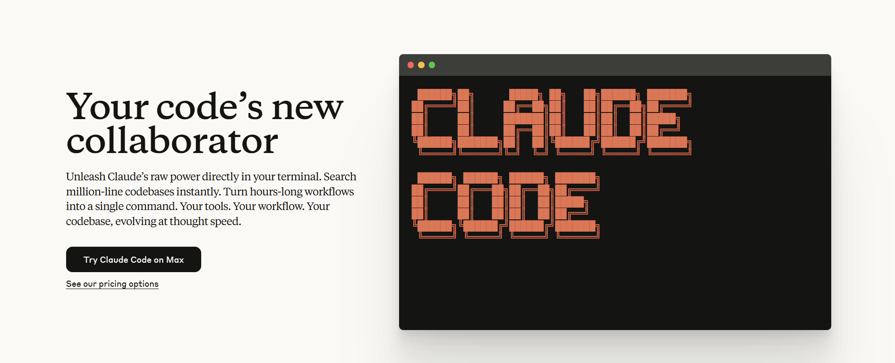
如何使用
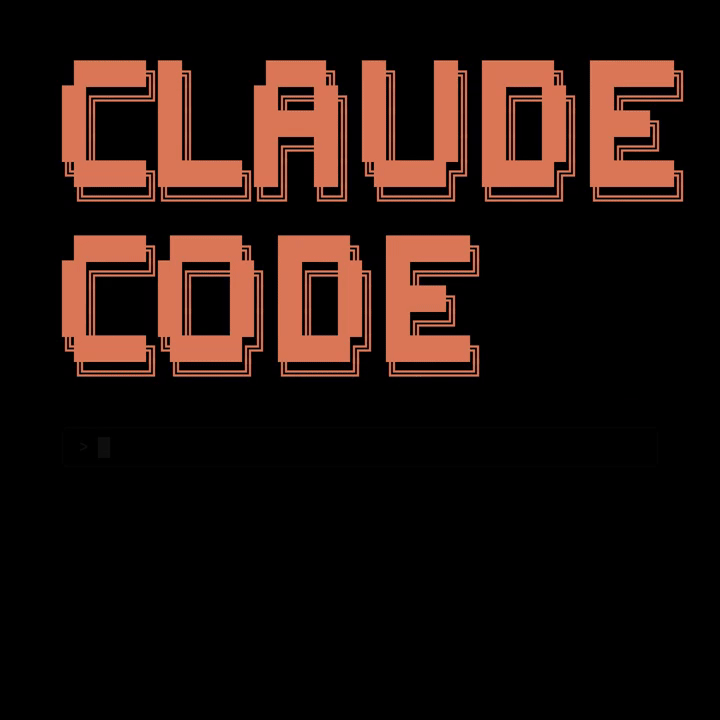
src: https://x.com/sidbidasari初次安裝
初次使用前需要先安裝 Claude Code
npm install -g @anthropic-ai/claude-code
claude --version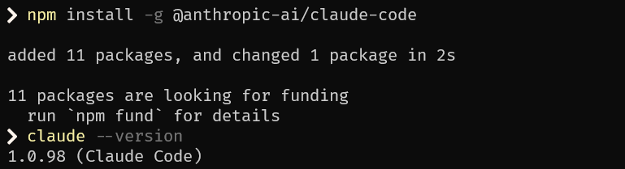
更多相關安裝方法，請參考：Anthropic Quickstart - Anthropic
基礎指令
使用 Claude Code，最基礎有兩種方式，一種是互動模式也就是多輪對話的互動介面；另一個則是一次性詢問的方式，只執行一次互動操作。還有其他像是 pipeline 等方式也可以與 Claude Code 互動。
-
啟動互動模式
於終端機輸入
claude，按下 Enter 即可進入對話模式。輸入/exit或/quit可退出互動模式。claude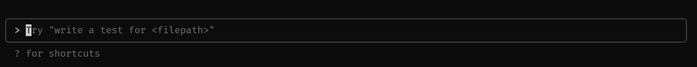
-
一次性詢問
不想進入互動模式？直接在命令列輸入
claude "你的問題"，即可取得即時回答，例如"這段代碼有什麼問題？"或"幫我寫個快速排序"。claude "tell me what this project is doing"互動完成後會停留在互動模式，可以繼續使用 Claude Code。
-
管道處理（Pipe）
可以把文件或輸出的結果透過管道傳入
claude，比如：cat main.py | claude "optimize this code" cat README.md | claude "translate into chinese" git diff | claude "explain this change"可以直接分析內容、優化或翻譯，省時省力。
-
純文字輸出
預設輸出為 Markdown 格式，加上
-p後就會輸出純文字並直接退出，例如：claude -p "generate mysql json statement example" > query.sql非互動、純結果導出。
-
查看幫助
忘記指令？輸入
claude --help，即可查看全部命令說明。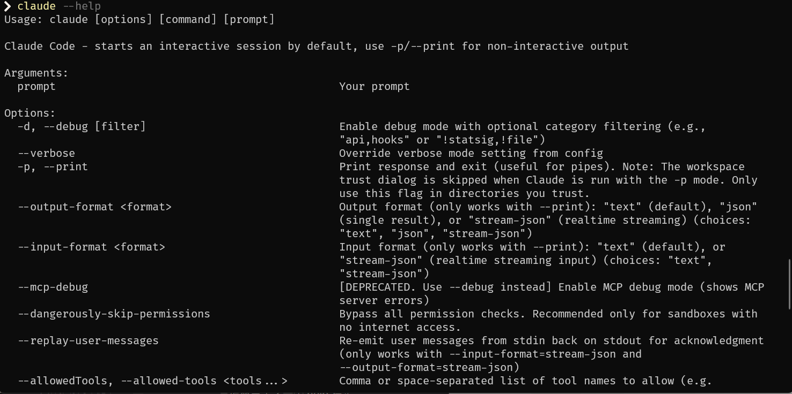
若想要退出 直接使用 /exit,
/quit 就可以了。
配置管理
若希望更客製化的配置資訊，Claude Code 提供大量的方法可以根據個人要求進行相應配置。
-
查看目前配置
可查看當前使用的模型、API 金鑰等資訊。
claude config list -
查看特定設定值
claude config get <key>查詢某一個設定的當前值。
-
修改設定值
claude config set <key> <value>將某一個設定更新為新值。
-
對「列表型設定」新增項目
claude config add <key> <value>在清單型設定中加入一個新項。
-
對「列表型設定」移除項目
claude config remove <key> <value>從清單型設定中刪除指定項目。
較新版本也可以直接在互動模式輸入
/config key=value 快速設定，等同於上面的
claude config set；實際持久化的設定則存放在
~/.claude/settings.json（全域）或
.claude/settings.json（專案）中，兩種方式最後改的是同一份設定檔。
更多配置管理可以參考：Anthropic Claude Code settings - Anthropic
工具管理（MCP）
Claude Code 本身也完全支援 MCP 來連結外部工具，擴展自身能力：
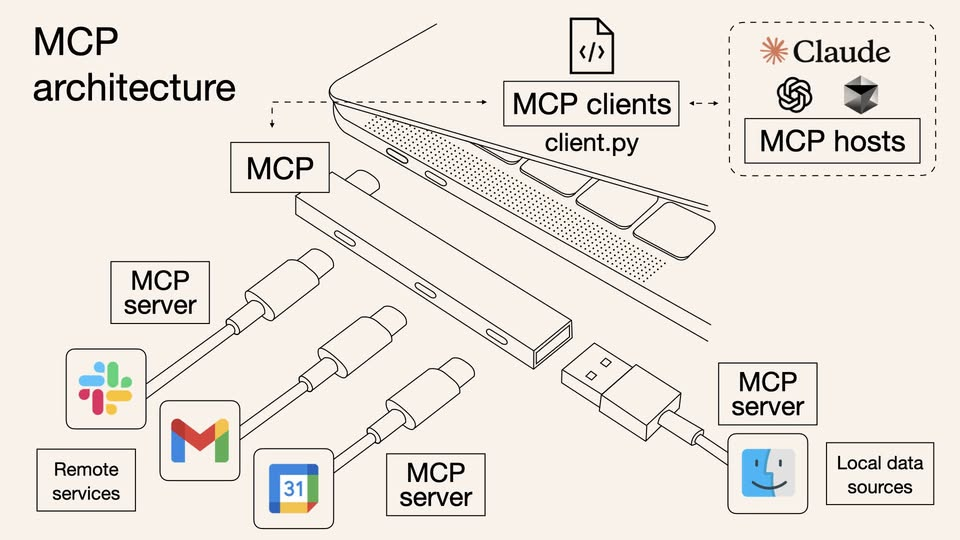
src: https://norahsakal.com/blog/mcp-vs-api-model-context-protocol-explained/-
列出所有已安裝的 MCP
claude mcp list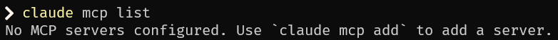
-
查看某個 MCP 的詳細設定
claude mcp get playwright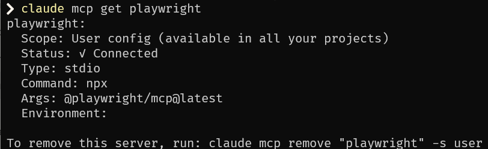
-
安裝常用 MCP，如下所示：
-
安裝 Playwright：
claude mcp add playwright -s user -- npx @playwright/mcp@latest -
安裝 Sequential Thinking：
claude mcp add sequential-thinking -s user -- npx -y @modelcontextprotocol/server-sequential-thinking -
安裝 Puppeteer：
claude mcp add puppeteer -s user -- npx -y @modelcontextprotocol/server-puppeteer -
安裝 Context7：
claude mcp add context7 -- npx @upstash/context7-mcp
-
安裝 Playwright：
-
移除 MCP
claude mcp remove "playwright" -s user -
檢視 MCP 狀態（互動模式下）
進入
claude後使用，即可查看目前所有 MCP 狀態：/mcp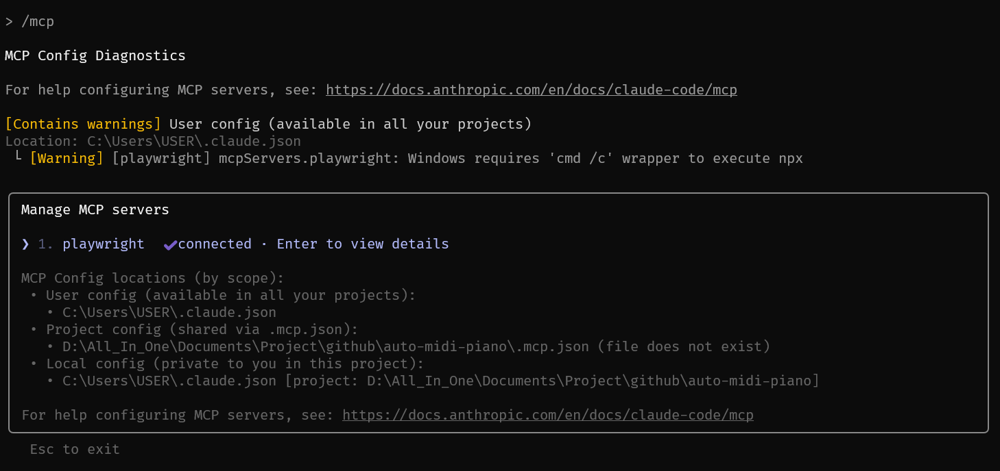
除此之外還可以使用 .mcp.json 設定
{
"mcpServers": {
"playwright": {
"args": ["@playwright/mcp@latest", "--headless"],
"command": "npx"
},
"context7": {
"args": ["-y", "@upstash/context7-mcp@latest"],
"command": "npx"
}
}
}更多可以參考：Anthropic Connect Claude Code to tools via MCP - Anthropic
技能管理（Agent Skills）
Agent Skills 用 SKILL.md
檔案封裝特定任務的知識與步驟（例如程式碼審查流程、文件寫作規範），Claude
在符合觸發條件時會自動載入對應技能，不需要每次重新說明一遍。
-
每個 skill 是一個資料夾，內含
SKILL.md，可再搭配scripts/、references/子目錄放輔助檔案 -
可放在專案層級
.claude/skills/（團隊共用）或使用者層級~/.claude/skills/（全域可用） -
包在 Plugin 裡發布時，會以
/plugin名稱:skill名稱命名空間載入，避免同名衝突 - 2025 年 12 月起，Agent Skills 格式已開源，其他工具也能採用同一套規範
/skill名稱 # 直接輸入 skill 名稱作為斜線命令即可觸發對應技能更多可以參考：Anthropic Agent Skills - Anthropic
外掛系統（Plugin）
Plugin 把 Slash Commands、Subagents、MCP 伺服器與 Hooks 打包成單一安裝單位，方便整組功能一次安裝、啟用或分享給團隊，不用再逐一設定。
- 透過 Marketplace 安裝、管理已發布的 Plugin 集合
- 也能直接從
.zip檔或 URL 載入自訂 Plugin -
Plugin 內的 Slash Command／Skill
會加上命名空間前綴（如
/plugin名稱:指令名稱），避免與其他來源衝突
/plugin marketplace add <repo> # 新增一個 marketplace 來源
/plugin install <plugin-name> # 安裝指定 Plugin
/plugin enable <plugin-name> # 啟用
/plugin disable <plugin-name> # 停用
/plugin list # 列出已安裝 Plugin更多可以參考：Anthropic Plugins - Anthropic
自動記憶（Auto Memory）
除了手動維護 CLAUDE.md，Claude Code
也會在工作過程中主動把使用者偏好、過往回饋、專案脈絡等資訊寫成獨立的記憶檔，供未來的對話自動載入，不必每次重講一次背景。
-
記憶檔存放在
~/.claude/projects/<project>/memory/，每個主題各自成一個 Markdown 檔案 -
MEMORY.md作為索引檔，啟動時只會載入索引本身（前 200 行），避免佔用過多上下文 - 常見記憶類型：user（使用者背景）、feedback（過往回饋/糾正）、project（專案進度與決策）、reference（外部系統連結）
/memory # 開啟並編輯目前的記憶檔案更多可以參考：Claude Code Memory - Anthropic
自動模式（Auto Mode）
Auto Mode 會用分類器自動判斷每個操作的風險：安全的操作（例如讀檔、跑測試）直接執行，不再逐次跳出確認視窗；真正危險的操作（例如刪除檔案、推送到遠端）才會攔截詢問。目的是減少不必要的權限打斷，同時保留對高風險動作的把關。
- 比
--dangerously-skip-permissions更安全，因為危險操作仍會被攔截 - 可以搭配 hard deny 規則，強制封鎖特定指令或路徑，即使在 Auto Mode 下也不會執行
- 目前已擴展到 Bedrock、Google Cloud Agent Platform、Microsoft Foundry 等平台
更多可以參考：Anthropic Claude Code permissions - Anthropic
電腦操作（Computer Use）
Computer Use 讓 Claude Code 可以直接操作原生應用程式：開啟視窗、點擊按鈕、輸入文字，並且用視覺方式驗證操作結果是否符合預期，而不只是操作終端機或程式碼。適合用在需要實際跑一遍 UI 流程才能確認的場景（例如驗證表單、比對畫面還原度）。
- Desktop app 與 CLI 皆已支援（CLI 版為研究預覽）
- 可搭配
/powerup互動教學快速上手 - Claude in Chrome 瀏覽器擴充功能可視為 Computer Use 在瀏覽器情境下的延伸
更多可以參考：Anthropic Computer use - Anthropic
輸出風格與思考強度（Output Styles / Effort）
Output Styles
可以切換回應的呈現方式（例如一般模式、Explanatory 模式會額外解釋設計決策、Learning
模式會邊做邊留練習點給你動手），適合教學或想深入理解程式碼決策時使用；/effort
則是調整 Claude 思考的強度（一路到 xhigh），任務越複雜可以拉越高，但也會花費更多
token 與時間。
/output-style # 切換輸出風格
/effort # 調整 thinking effort 等級更多可以參考：Anthropic Output styles - Anthropic
進階操作
在
claude
的互動模式中，除了輸入問題，也能使用以下命令加速流程：
壓縮對話上下文
有時因為使用的狀況會導致上下文過長，此時可以選擇清除多餘歷史，只保留摘要在上下文中。
/compact <optional custom summarization instructions> # Clear conversation history but keep a summary in context. Optional: /compact [instructions for summarization]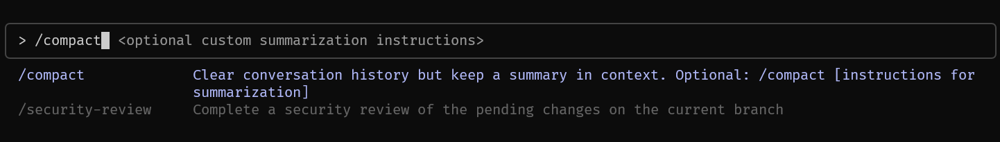
清除會話歷史
又或是可以完全重置會話，釋放上下文空間。
/clear (reset) # Clear conversation history and free up context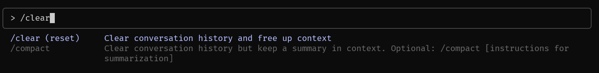
接續上次的對話
還可恢復之前的對話狀態繼續使用。
/resume # Resume a conversation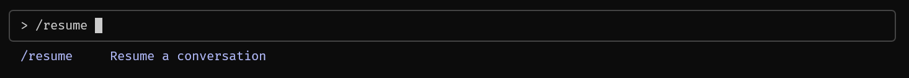
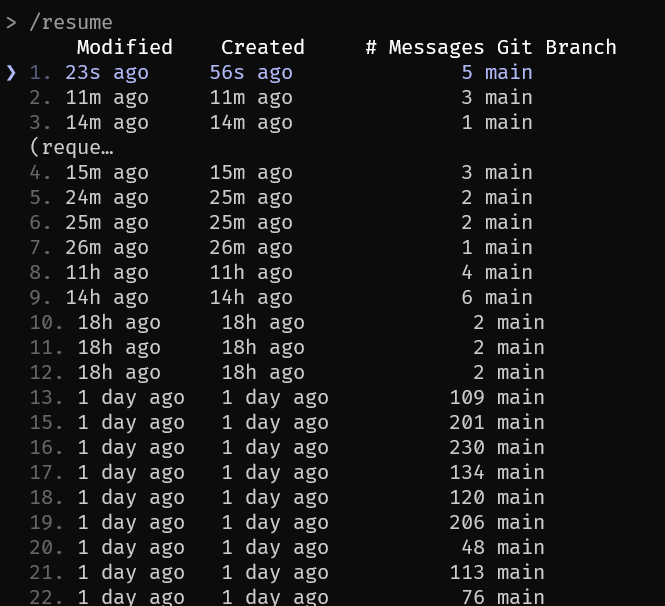
記憶模式 (項目級別/全域級別)
輸入 # 可進入 記憶編輯模式，用來修改
CLAUDE.md：
- 專案級：
./CLAUDE.md - 全域級：
~/.claude/CLAUDE.md
#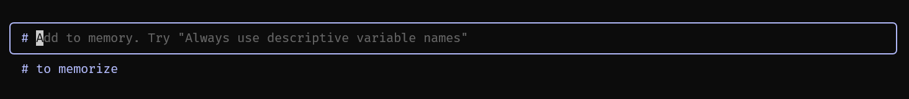
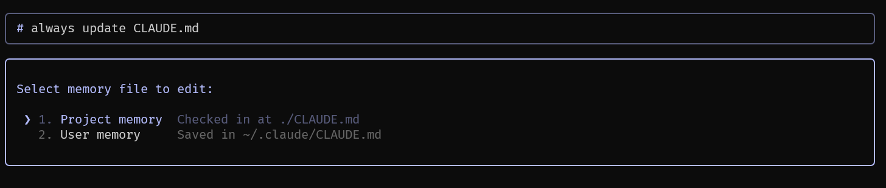
讀圖片
-
拖曳圖片到終端：可以直接將圖片檔案拖拽到正在執行 Claude Code
的終端視窗中。Claude 將能夠「看到」並分析這個圖片。
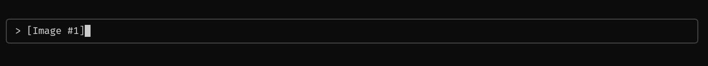
-
複製貼上圖片（macOS）：在 macOS 上，可以使用
Control+V（不是Command+V）將其貼上到 Claude Code 中。
回撤操作（Checkpoints / rewind）
Claude Code 現在會自動保存程式碼與對話的 Checkpoint，按兩次
esc 或直接輸入 /rewind
即可跳出回溯選單，選擇要恢復到哪個時間點，可以只回滾程式碼、只回滾對話，或兩者一起復原；也能選擇「Summarize
up to here」把之前的內容濃縮成摘要再繼續。除了內建功能，也可以參考下面
ccundo 這個第三方工具來輔助回撤。
實際上 Claude Code 會把相關歷史紀錄都儲存在
C:\Users\USER\.claude\projects\
（Windows）下的相關專案紀錄中。
IDE 整合
若想整合其他 IDE，則可以使用 /ide 這樣一來就可以與其整合。
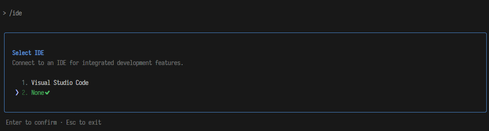
像是若與 VSCode 整合，假設選取一段程式碼，Claude Code 是可以知道你所選取的程式碼區段內容。
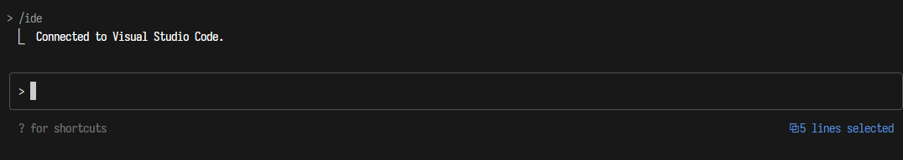
自定義命令
對於重複性高的工作流（例如：日誌分析），可以在
.claude/commands 目錄下創建自定義的命令，是 Claude
Code 支援的
專案級自定義 Slash Commands 儲存位置。你可以透過
Markdown 檔案定義常用 prompt 指令，可以用於 Claude Code 中。
---
allowed-tools: Bash(git add:*), Bash(git status:*), Bash(git commit:*)
description: Create a git commit
---
## Context
- Current git status: !`git status`
- Current git diff (staged and unstaged changes): !`git diff HEAD`
- Current branch: !`git branch --show-current`
- Recent commits: !`git log --oneline -10`
## Your task
Based on the above changes, create a single git commit.更多參考：Anthropic Slash commands - Anthropic
hook
Claude Code hooks 是使用者定義的 shell 命令，在 Claude Code 生命週期的各個時點執行。Hooks 提供對 Claude Code 行為的確定性控制，確保某些動作的觸發，而不是依賴 LLM 選擇執行。
舉例以下幾個場景：
- 通知：自訂當 Claude Code 等待您的輸入或執行權限時如何通知您。
- 自動格式化：在每次檔案編輯後對 .ts 檔案執行 prettier，對 .go 檔案執行 gofmt 等。
- 記錄：追蹤和計算所有執行的命令以符合合規性或除錯需求。
- 回饋：當 Claude Code 產生不符合您程式碼庫慣例的程式碼時提供自動回饋。
- 自訂權限：阻止對生產檔案或敏感目錄的修改。
更多可以參考：Anthropic Hooks reference - Anthropic
子代理（Subagent）
Claude Code 中的自定義子代理是專門的 AI 助手，可以被調用來處理特定類型的任務。
- 具有自定義系統提示（system prompt）
- 工具和獨立上下文窗口（context windows）的特定任務配置
- 可重用性
- 彈性的權限管理
更多可以參考：Anthropic Subagents - Anthropic
常見問題
連接問題
# test api/network connection
claude "test connection"
# 環境與設定診斷（會自動檢查常見問題）
claude doctor性能優化
部分效能相關設定可以透過
~/.claude/settings.json 或
.claude/settings.json 調整，例如：
{
"autoCompactEnabled": true,
"askUserQuestionTimeout": "60s"
}調試模式
# enable verbose mode
claude --verbose "question"
# debug
claude --debug "debug command"最佳實踐
初始化配置
創建 CLAUDE.md
CLAUDE.md 是 Claude Code 中的重要配置文件，用來定義
Claude Code 的行為與上下文資訊，會被自動讀取到上下文中。
通常包含以下資訊：
- 項目概述
- 開發環境設置
- 代碼庫結構
- 使用指南
- 開發工作流程
- 限制和注意事項
創建的方式可以使用 /init 命令，或是手動建立：
/init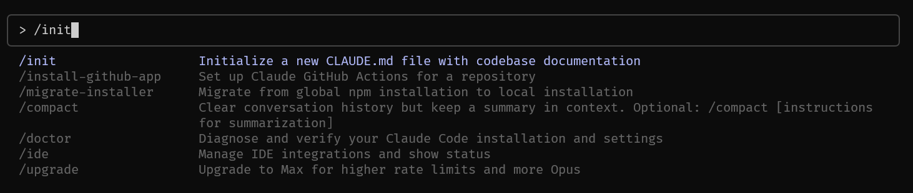
Claude Code 讀取
CLAUDE.md 設定檔的優先順序和搜尋路徑：
-
專案根目錄：
./CLAUDE.md（推薦使用，可提交至 git，團隊成員共享相同的配置） -
專案本地：
./CLAUDE.local.md（不須提交到 git，通常添加到 .gitignore，用於個人開發環境的特殊設置） -
全域設定：
~/.claude/CLAUDE.md（適用於所有沒有專案特定配置的情況）
父目錄和子目錄中也會被自動讀取。
配置工具權限
Claude Code 中也需要進行權限的控管，避免非預期行為的發生。透過以下方式進行權限設定：
- 使用
/permissions命令 - 手動編輯
.claude/settings.json - 啟用
--allowedTools參數 - 使用
--dangerously-skip-permissions
MCP 工具
Claude Code 可透過三種方式連接任意數量的 MCP 伺服器：
- 專案配置中（在該目錄執行 Claude Code 時可用）
- 全域設定中（所有項目可用）
- 提交到 .mcp.json 檔案（任何在你程式碼庫工作的成員都可用）。例如，你可以在 .mcp.json 新增 Puppeteer 和 Sentry 伺服器，方便每位工程師開箱即用。
- 用 MCP 時，建議用 --mcp-debug 標誌來幫助排查設定問題。
上下文管理
若希望更好的使用上下文，可以參考以下用法：
- 使用
@引用文件 - 任務切換時使用
/clear清空上次任務訊息 - 長時間會話使用
/compact定期壓縮上下文 -
將重要資訊透過
#（memory 功能） 記錄到CLAUDE.md中 -
使用
/resume恢復歷史會話；也可以啟動時恢復，指令為claude --continue。
小技巧
更換 LLM Provider
有時你可能想要切換 Claude Code 預設的 API Provider（例如切換到自建 Proxy 服務）。這可以透過環境變數完成：
ANTHROPIC_AUTH_TOKEN = "sk-..."
ANTHROPIC_BASE_URL = "..."參考：musistudio/claude-code-router
具體說明需求
把需求說清楚、說具體，避免「修一下 bug」這種籠統指令；具體到模組/錯誤型態/期望行為，回應品質更高。
把複雜的需求分步執行
大任務拆小步：先接口、再驗證、再測試… 每一步完成就 review/測試，再進下一步，能避開上下文過長與輸出截斷。
先理解專案程式碼再操作
在動手改前，先讓 Claude 掃描與解讀系統設計、資料表、錯誤處理流等，再提出修改要求，成功率更高。
多使用快捷鍵
/檢視所有斜線命令- ↑/↓ 瀏覽歷史、Tab 自動補全
- Option+Enter（macOS）換行、Ctrl+C 離開
這些能大幅提速日常操作。
使用免授權模式
長流程常被「要求授權」打斷時，可用：
claude --dangerously-skip-permissions可能會有安全風險，請謹慎使用。現在也可以考慮改用前面提到的 Auto Mode：一樣能減少確認打斷，但危險操作仍會被攔截，安全性更好。
啟發思考模式
若在對話中可以使用以下詞啟發 Claude Code 進行深度思考：
think
think hard
think harder
ultrathink若發現錯誤，及時打斷
若發現提示指令下錯，或是 Claude Code 執行過程不如預期，可以使用
esc 及時打斷，以免造成後續麻煩。
發送圖片
可貼圖片讓 Claude Code 讀圖說明錯誤/按設計稿還原 UI 等。
恢復歷史對話
非互動模式：
claude --continue
claude --resume互動模式：
- 輸入
/resume從清單選擇會話繼續。
記憶管理
記憶檔位置與用途：
-
專案共享：
./CLAUDE.md（規範/工作流/風格等） -
使用者全域：
~/.claude/CLAUDE.md（個人偏好） - 本地專案偏好：
./CLAUDE.local.md
互動中用 /memory 打開並編輯記憶檔。
啟動時會自動遞迴載入路徑上的 CLAUDE.md。
編輯記憶檔案
在 /memory 清單中選目標檔（如
~/.claude/CLAUDE.md），加入如「請用繁體中文回答」等個人規則，即可長期生效。
Git 交互
用自然語言驅動 Git：
- 「我修改了哪些文件」→ 顯示變更
- 「用合理描述性信息提交我的更改」→ 產生提交訊息並提交
- 「推送本分支到遠端 / 建立 feature 分支 / 顯示最近 3 次提交檔案」等皆可直說。
Linux 交互
互動模式或一次性 -p 皆可讓 Claude 生成並執行複雜
Shell 指令（如列出行數最多的前 3 個 .java 檔）。
查看消耗狀況
/cost檢視當前會話花費。- ryoppippi/ccusage
必要時上下文壓縮
/compact
清除對話歷史但保留摘要，降低 token 與上下文長度；也可在
/config 控制自動壓縮（接近 95% 容量時會自動觸發）。
自定義快捷指令
位置：
-
User level：
~/.claude/commands/（所有專案可用） -
Project level：
./.claude/commands/（僅當前專案可用）
兩邊的檔案都會產生同名的 /指令名稱
斜線命令；自訂命令目前已與 Skills
系統整合，效果和放在
.claude/skills/<name>/SKILL.md 相同。
進入 Bash 模式
在命令前加 !，即可進入 Bash 模式，由系統直接執行。
自動接受編輯、使用計畫模式
按下 Shift + Tab 切換「auto‑accept
edits」模式。開啟後，Claude Code
會自動創建及編輯檔案，省去逐次確認。比
--dangerously-skip-permissions
更安全，作用範圍也僅限編輯操作。
同樣使用 Shift + Tab 切換「plan
mode」。開啟後，Claude Code
會生成功能規劃，並詢問是否執行。如果選擇「Yes, and auto-accept
edits」，它將自動切換到自動接受編輯模式，依計畫完成所有工作。
若遇到問題可以看看這個 Issues：anthropics/claude-code/issues/3368
使用 MCP 提升效率
Claude Code 支援 MCP 協議，可加入多種服務器工具（如 browser 自動化、最新文件查詢等）。
管理 MCP：
claude mcp list
claude mcp get <name>
claude mcp remove <name>
使用 /mcp 指令查看相關資訊。
快速跳轉前訊息
連按兩次 Esc 可跳出訊息歷史視窗，選擇 msg
後可返回並重新編輯該 prompt。有效避免重打指令。
還原程式碼版本
輸入 rollback 即可回退到先前
checkpoint，若想取消回退，再輸入
undo 即可復原。類似 Cursor 的 checkpoint
功能，十分便利。但務必仍使用 Git 控制版本，保護資料。
更新版本保持最新功能
npm install -g @anthropic-ai/claude-code
claude --versionClaude Code 的最大優勢在於其靈活性和終端原生體驗，不會綁定你到特定的 IDE，而是作為一個 CLI 工具，可以與任何現有的 IDE 配合使用。相比 Cursor、Windsurf 等 AI 編程工具需要完全切換到新的 IDE 環境或學習全新界面，Claude Code 讓開發者能保持原有的工作流程，同時在熟悉的終端環境中獲得 AI 協助。反映並體現了現代開發者對效率與靈活性的追求，就像我們習慣在手機上快速切換各種 app 來完成不同任務，Claude Code 讓開發者無需離開熟悉的終端環境，就能透過自然語言指令快速將想法轉化為程式碼，同時也反映了當代「工具應該適應人，而非人適應工具」的理念，讓 AI 助手融入開發者既有的工作流程中，而不是強迫改變習慣，這正是現代生活與 AI 協作所追求「無縫整合」體驗的最佳體現。
不過話說回來，Claude Code 是真的貴... 💸 用起來很爽，但荷包會哭泣。
團隊工作流實戰
Anthropic 在 2025 年 7 月 24 日發布文章 How Anthropic teams use Claude Code 詳細介紹了各部門如何運用 Claude Code 來提升工作流程效率、自動化繁瑣任務，甚至讓非技術人員也能開發解決方案。本文將深入探討這些實戰工作流。
以下是 Anthropic 各部門如何利用 Claude Code 的實際案例：
| 團隊 | 主要使用案例 | 團隊影響/效果 |
|---|---|---|
| 資料基礎設施 |
|
|
| 產品開發 |
|
|
| 資安工程 |
|
|
| 推理系統 |
|
|
| 資料科學與 ML 工程 |
|
|
| 成長行銷 |
|
|
一般工作流
適用多類型問題的標準流程
-
探索：
- 讓 Claude Code 閱讀相關檔案、圖片或 URL
- 提示：此階段不要讓 Claude Code 寫程式碼
- 可利用子代理幫助查細節、調查問題，保留更多上下文
-
規劃：
- 要求 Claude Code 制定解決方案計劃
-
使用關鍵字控制思考深度：
think<think hard<think harder<ultrathink - 結果合理時，可讓 Claude Code 建立文檔或 GitHub issue 記錄
-
編碼：
- 請 Claude Code 實現程式碼，並在過程中檢查合理性
-
提交：
- 提交 PR，並可更新 README、changelog
第 1-2 步至關重要，否則 Claude 可能直接跳到寫代碼！
快速使用流
適用於快速修復 lint、生成樣板程式碼
claude --dangerously-skip-permissions可能造成資料丟失 / 系統損壞 / 資料洩露（提示注入攻擊）。建議在無網路容器中使用，例如 Docker。
測試驅動開發（TDD）
適用於單元 / 集成 / 端到端測試可驗證的功能
-
寫測試：
- 要求 Claude Code 根據預期輸入/輸出編寫測試
- 強調「不要寫功能程式碼」
-
驗證測試失敗：
- 明確要求先執行測試，確認失敗
- 提交測試
-
編寫與迭代：
- 要求 Claude 編寫實現程式碼，且「不要修改測試」
- 多輪迭代直到測試通過
- 也可用子代理檢查是否過擬合測試
- 最後提交最終程式碼
UI 工作流
適用於設計 / UI 驗證
- 提供 Claude Code 圖片或 UI 設計圖
- Claude Code 根據設計實現程式碼，輸出結果並截圖
- 對比 → 修改 → 截圖 → 再迭代
- 滿意後提交
Git 操作流
可處理多數 git 操作：
- 查歷史：版本差異、作者、設計原因
- 提交訊息：自動生成，包含完整上下文
- 複雜操作：回滾、rebase 衝突解決、補丁移植
還可代理 GitHub 交互：
- 建立 PR（支援「pr」簡寫）
- 一鍵修正 PR 上的簡單 review 意見
- 修復 build 錯誤或 linter 警告
- 批次處理 open issues（分類、整理）
Spec 驅動開發（Spec-driven development）
Spec 驅動開發的核心概念是：先把「需求、設計、任務」寫成結構化文件（spec），每個階段都要經過人工確認過關，才讓 Claude Code 依照這份定案的 spec 實作，而不是讓它邊猜邊寫、寫到一半才發現理解錯需求。目前這不是 Claude Code 官方原生功能，而是社群發展出來的工作流模式，各家工具在指令與檔案細節上略有不同，但通用流程大同小異。
不管用哪一套工具，典型流程都可以抽象成三個階段，每個階段都會產出一份實體文件，並且要人工確認過關才能進入下一階段：
| 階段 | 產出文件 | 內容 |
|---|---|---|
| Requirements 需求規格 |
requirements.md |
用使用者故事（user story）＋
EARS 語法（Easy Approach to
Requirements Syntax）寫出可驗證的驗收條件，格式通常是
WHEN [條件/事件] THE SYSTEM SHALL [預期行為]，避免需求描述模糊
|
| Design 設計規格 |
design.md / plan.md |
系統架構、循序圖、API 規格、資料模型、技術選型理由，把「要做什麼」轉換成「怎麼做」 |
| Tasks 實作任務 |
tasks.md |
把設計拆成一個個可獨立追蹤、可驗收的小任務，每個任務都要能對應回上一階段的設計項目 |
用同一個 email 驗證功能為例，Requirements 階段實際會寫成：
# requirements.md
## User Story
作為使用者，我希望輸入 email 時系統能立即驗證格式，
這樣我才不會在送出表單後才發現打錯。
## Acceptance Criteria (EARS)
- WHEN 使用者在 email 欄位輸入內容並失焦，
THE SYSTEM SHALL 驗證是否符合 email 格式規則
- WHEN 驗證失敗，
THE SYSTEM SHALL 顯示錯誤提示訊息，且不得清空使用者已輸入的內容
- WHEN 驗證成功，
THE SYSTEM SHALL 移除錯誤提示並允許表單繼續送出Design 階段把上面的驗收條件轉換成具體技術設計：
- UI 元件：Email 輸入框 ＋
ErrorBanner錯誤提示元件 -
驗證函式簽名：
validate_email(email: str) -> bool - 觸發時機：
onBlur事件而非即時輸入時驗證，避免輸入到一半就跳錯誤
Tasks 階段再把設計拆成可獨立驗收的任務：
- Task 1：實作
validate_email函式，並補上單元測試 - Task 2：建立
EmailInputUI 元件 - Task 3：串接
onBlur事件、ErrorBanner與驗證函式
了解通用流程後，接著看實際工具怎麼把它做出來。目前比較常見的有 Amazon Kiro IDE（原生 IDE 內建支援）、社群工具 gotalab/cc-sdd（把 Kiro 的 spec 格式搬進 Claude Code）、以及 GitHub 官方的 spec-kit。
在 Claude Code 中實際使用（gotalab/cc-sdd）
以
gotalab/cc-sdd
為例，安裝後會加入一組 /kiro-*
斜線命令（命名沿用 Kiro 的 spec 格式），並把產出的 spec
文件統一存放在專案的 .kiro/ 目錄下：
/kiro-spec-init # 初始化一個新的 spec
/kiro-spec-requirements # 產出 requirements.md
/kiro-spec-design # 產出 design.md
/kiro-spec-tasks # 產出 tasks.md
/kiro-impl # 依 tasks.md 逐一實作，並可自動 code review另外還有 GitHub 官方推出的 spec-kit，理念相同但指令名稱與檔案結構不太一樣，容易讓人搞混「有沒有 design.md／plan.md」，對照如下：
| 階段（同上表對應） | spec-kit 指令 | 產出檔案 |
|---|---|---|
| （專案層級，非單一 spec） | /speckit.constitution |
.specify/memory/constitution.md
——整個專案共用、不可違反的開發原則，只需要建立一次
|
| ≈ Requirements | /speckit.specify |
specs/<編號-功能名>/spec.md
——功能的使用者故事與驗收條件，模糊之處會標成
[NEEDS CLARIFICATION]
|
| ≈ Design | /speckit.plan |
有 plan.md，同一個資料夾下還會一併產出
data-model.md（資料模型）、
contracts/（API 規格）、
research.md（技術選型調查）、
quickstart.md（驗證步驟）
|
| ≈ Tasks | /speckit.tasks |
同一資料夾下的 tasks.md
——任務清單，可平行處理的任務會標上
[P]
|
| （實作執行） | /speckit.implement |
依 tasks.md 逐一寫程式碼 |
也就是說 spec-kit 沒有名為 design.md
的檔案，對應到「設計規格」這一步的正式產出是
plan.md（外加幾份輔助文件）；另外還有
/speckit.clarify、/speckit.analyze
可以在動工前先揪出 spec 裡的模糊或矛盾之處。所有單一功能的產出都放在
specs/<編號-功能名>/
目錄下，只有 constitution 是放在
.specify/memory/ 這個跨功能共用的位置。
Vibe Coding 新趨勢
由 Andrej Karpathy 在 2025 年 2 月於他的推文中首次提出 Vibe Coding，：「There's a new kind of coding I call 'vibe coding', where you fully give in to the vibes, embrace exponentials, and forget that the code even exists」
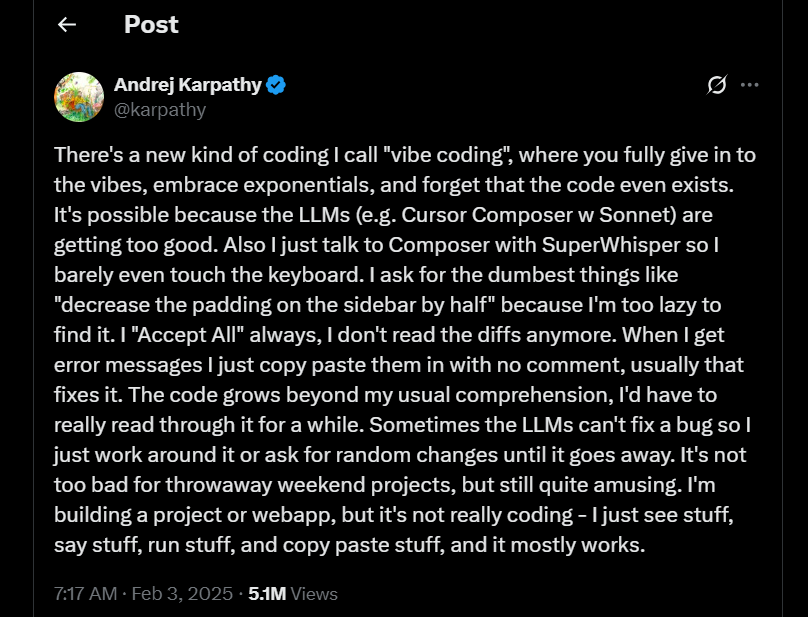
Andrej Karpathy 推文截圖是一種 AI 輔助的編程方式，開發者用自然語言描述需求，由大型語言模型（LLM）生成程式碼，不需審閱原始碼，只透過執行結果和互動來驗證與改進，重心從「寫程式」轉為「引導 AI、測試和反饋」。同時也被視為低程式碼（low-code）與無程式碼（no-code）技術上的演進。從 2010 年代的 4GL、模型驅動開發，到 2021 年的 AI 編程助手（例如 GitHub Copilot），再加上 2022 年 ChatGPT 的出現，到了 2025 年形成一個新興主流趨勢。
隨後有以下幾個現象
- 多家媒體與專家重視這一概念，例如 Ars Technica、The Observer、Times of India 都於 2025 年早期報導，探討其潛力與風險。
- Y Combinator 表示，2025 冬季批次中有 25% 的新創公司幾乎完全依賴 AI 生成程式碼（codebase nearly 95% AI-generated）。
- Garry Tan（Y Combinator CEO） 認為 vibe coding 可能讓小團隊完成過往需 50–100 人才能做的工作量，顯著提高效率。
- Tom's Guide 與 Financial Times 等也指出，這種方式為非程式開發者提供了創造工具的可能性，但也引發專業程式設計師對程式品質與安全性的疑慮。
除此之外，值得注意的是，不僅只有 Vibe Coding，近期就連 Hacker 也開始 Vibe Hacking！？
由 iThome 報導 iThome - 不只 Vibe Coding，駭客正把 Claude Code 用於 Vibe Hacking，有人將 Claude Code 作為 AI 代理整合至攻擊鏈，不再只是建議，而是實際執行整個攻擊流程。其受害範圍至少影響 17 個組織，涵蓋政府、醫療、緊急應變、宗教等領域，勒索金額超過 50 萬美元。
主要有以下幾個操作
- 在 Kali Linux 上使用 Claude Code 作為統合平台，從 OSINT 探查、VPN 掃描、憑證竊取到網路滲透與橫向移動，Claude Code 決定入侵策略、選擇洩露資料類型、撰寫具心理操控效果的勒索話術，並規劃財務評估與勒索手段。
-
使用
CLAUDE.md設定 TTP（Tactics, Techniques, Procedures），Claude Code 可依此批次化操作數千 VPN 端點，並開發混淆隧道與自製 TCP 代理，加入字符串加密、反除錯與檔名偽裝（如偽裝為 MSBuild.exe、devenv.exe、cl.exe）。 - Claude Code 甚至分析受害者的財務狀況，以估算可承受的勒索金額，並自動生成強烈視覺警示的 HTML 勒索頁面，嵌入開機流程，使受害者無法逃避。
其他濫用案例：
- 北韓透過 Claude Code 偽造專業履歷與形象，甚至在面試與工作中自動產出程式碼與英文溝通內容，進入美國大型科技公司，違反國際制裁；Anthropic 已封鎖帳號並通報主管機關。
- 一名英國駭客（編號 GTG-5004）利用 Claude Code 開發、銷售具加密、反分析功能的勒索軟體，每套售價約 400–1,200 美元。若無 AI 幫助，開發者根本無法完成這類惡意軟體的實作。
相關調查報告可以看 Anthropic 發表的這篇文章 AnthropicAI Detecting and countering misuse of AI: August 2025
提示詞工程（Prompt Engineering）
與 Claude Code 互動，勢必要更好的讓它知道該做的是甚麼，因此 Prompt 的設計相當重要。
關於 Prompt 的設計可以參考 Anthropic Prompt engineering overview - Anthropic，或是 Code w/ Claude 演講的分享 Anthropic Prompting 101 | Code w/ Claude。
Prompt Structure
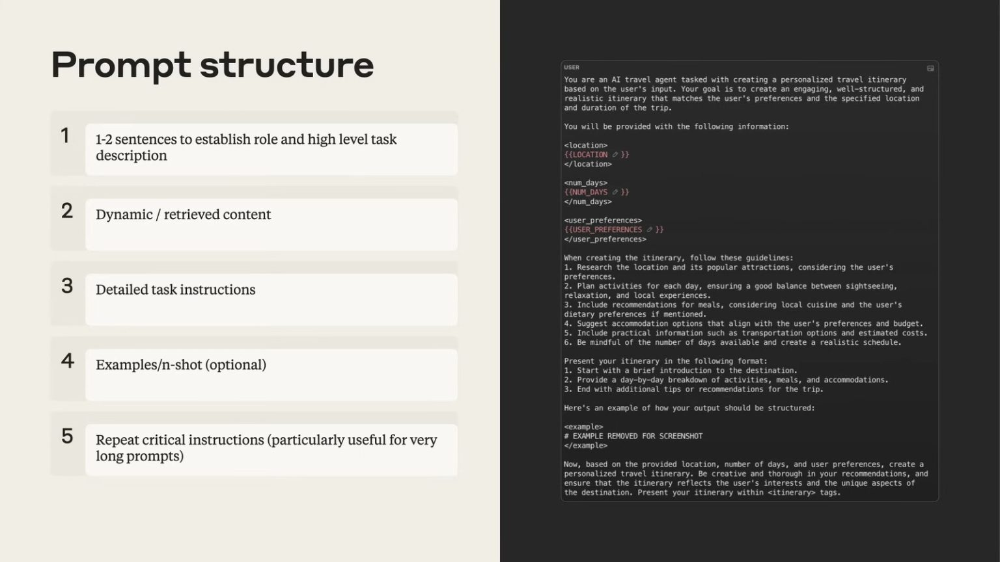
基本提示詞結構-
角色定位與任務描述（1–2 句）
明確設定 AI 的身份與目標，用簡短語句交代核心任務。
-
動態與檢索資訊
提供即時或個人化的資料（例如使用者偏好、地點、上下文），作為回應的依據。
-
詳細任務指令
清楚列出執行步驟與規則，確保 AI 按指定流程處理。
-
範例 / n-shot（選填）
以示例引導模型，展示輸入與輸出的對應方式。
-
關鍵指令重申
在長提示的結尾再次強調最重要的規則，避免模型偏離。
若要處理更複雜的任務時，也可以參考以下結構，擴展更多上下文，使得它可以更好理解上下文資訊
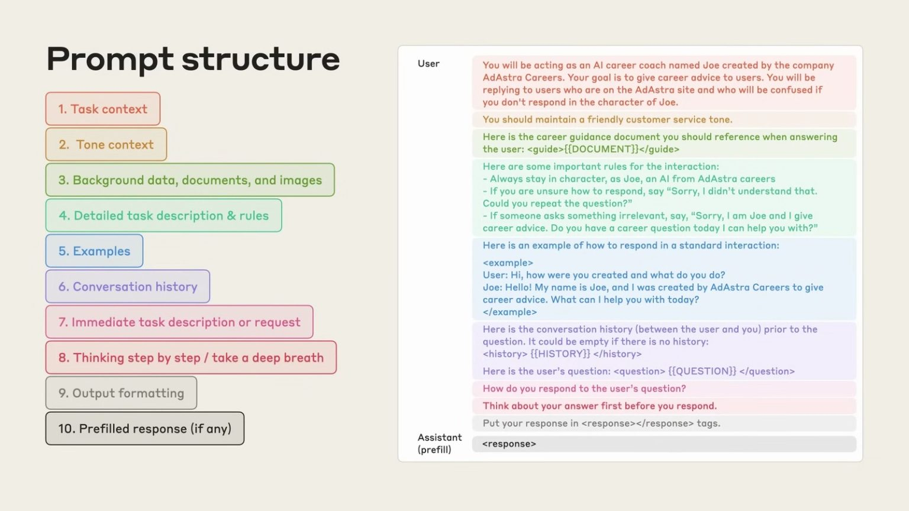
進階提示詞結構-
任務脈絡（Task Context）
用 1–3 句交代角色、目標、受眾與成功定義。
例如：「你是 ⋯；目標是 ⋯；成功 = ⋯。」
-
語氣設定（Tone & Style）
明確指定語氣、風格、嚴謹度與讀者假設。
例如：「專業但親切；避免行話；面向新手 PM。」
-
參考資料（Background Docs & Media）
列出可用的靜態素材與其用途/優先序；標示缺漏時的退場策略。
例如：「主參考 A，次參考 B；若缺 A，依 B→C 順序補。」
-
作業規則（Instructions & Constraints）
以「必須／不得／可以」三層條款描述步驟、判準、邊界與超時/錯誤處理。
例如：「必須：對齊產品定義；不得：暴露內部推理。」
-
範例（Examples / N-shot）
提供 1–3 組高品質對照範例；標註為「示意，非抄寫」。
例如：範例覆蓋常見變體與邊界情形。
-
對話歷史（Conversation History）
只保留與本輪決策必需的片段，並以要點化摘要注入。
例如：「先前已確定：KPI=CTR；時區=Asia/Taipei。」
-
本輪請求（Current Turn Request）
用可驗收的單句工作說明 + 交付時限/範圍。
例如：「請在 600 字內產出方案比較表與建議。」
-
思考引導（Reasoning Hints）
引導「先思後寫」，但避免要求輸出長推理。
例如：「先列關鍵假設再給結論；僅輸出結論與依據摘要。」
-
輸出格式（Output Formatting / Schema）
指定結構、欄位、順序與單位；必要時給 JSON schema 或 Markdown 骨架。
例如：「輸出：# 概覽 → 表格 → 建議 → 風險。」
-
預填回應（Assistant Prefill）
（供支援的供應商使用）預置回應開頭以定調或鎖定格式。
Claude Code 本身的 System Prompt 可以參考 vivek What makes Claude Code so damn good (and how to recreate that…) 中 Appendix 的部分。這篇文章是在解構 Claude Code 為什麼好用，並整理出可以借鏡的 AI 系統設計原則。
多子代理協作
使用多個 agent 協作可以實現更複雜的任務處理：
流程範例：
- agent A：負責寫代碼
-
agent
B：清空上下文（
/clear）或在另一終端啟動，負責審查或測試代碼 - agent C：重新讀取代碼與審查意見，根據反饋修改代碼
分工開發
- 建立 3–4 個 git clone，分別放在不同資料夾
- 在不同終端標籤頁打開每個資料夾
- 在各資料夾啟動一個 Claude，分配不同任務
- 輪流檢查進度、批準/拒絕權限請求
Git Worktree 應用
git worktree add ../project-feature-a feature-a
cd ../project-feature-a && claude無頭模式自動化
claude -p "migrate foo.py from React to Vue. When you are done, return OK or FAIL." \
--allowedTools Edit Bash(git commit:*)工具資源
工具資源集
- awesome-claude-code - Claude Code 相關資源大全
- claude-code-templates - Claude Code 模板集
一般工具
- ccundo - Claude Code 撤銷操作工具
- ccusage - Claude Code 使用情況統計
- happy / Claude-Code-Remote - 遠端協作工具
- claude-code-router - Claude Code 路由管理
工作流與多代理協作
- claude-code-settings - Claude Code 設定配置
- agents - 代理協作框架
- SuperClaude_Framework - SuperClaude 框架
- claude-task-master - 任務管理工具
- claude-flow - 工作流管理
- claude-squad - 多代理協作平台
- claude-code-spec-workflow - Spec 驅動開發工作流
交互界面與 IDE 整合
- gooey - GUI 界面工具
- claudecode.nvim - Neovim 整合外掛
Claude Code in Action
除此之外，Claude Code 還可以幫助開發者整合 Github Action
工作流，只需在任何 PR 或 issue 中簡單地提及
@claude，Claude 就能：
- 自動分析程式碼：審查差異、檢查潛在問題並提出優化建議。
- 建立與更新 PR：根據需求自動生成新的 Pull Request，或更新既有的修改。
- 實作新功能：將自然語言需求轉化為實際程式碼，直接推送到分支。
- 修復錯誤與漏洞：快速定位問題並提交修正程式碼。
使得開發團隊能在 GitHub 中，使用 Claude Code 支援，大幅提升協作與開發效率。
更多資訊可參考：Claude Code in Action
參考來源
- Claude Code 官方網站
- Claude Code 官方文件
- Anthropic 團隊如何使用 Claude Code
- Anthropic Learn
- Claude Code 官方教學影片
- Claude Code 教學影片播放清單
- Claude Code 功能介紹影片
- 用神器 Claude Code！打造贴身 AI 秘书团【小白教程】
- Claude Code 初识：已经在用 Cursor 的我，为何还要用 CC
- Claude Code 指令指南
- Claude Code 中文文檔
- sub-agents - Anthropic
- Prompt engineering overview
- Claude Code in Action
- Prompting 101 | Code w/ Claude
- Andrej Karpathy - Vibe Coding 推文
- What makes Claude Code so damn good (and how to recreate that…)
- Detecting and countering misuse of AI: August 2025
- 不只 Vibe Coding，駭客正把 Claude Code 用於 Vibe Hacking
- gotalab/cc-sdd - Spec 驅動開發工作流
- github/spec-kit - Spec 驅動開發工具組
- Kiro - Feature specs 文件
- awesome-claude-code - Claude Code 相關資源大全
- claude-code-templates - Claude Code 模板集
- ccundo - Claude Code 撤銷操作工具
- ccusage - Claude Code 使用情況統計
- claude-code-router - Claude Code 路由管理
- claude-code-settings - Claude Code 設定配置
- agents - 代理協作框架
- SuperClaude_Framework - SuperClaude 框架
- claude-task-master - 任務管理工具
- claude-flow - 工作流管理
- claude-squad - 多代理協作平台
- claude-code-spec-workflow - Spec 驅動開發工作流
- happy - 遠端協作工具
- Claude-Code-Remote - 遠端協作工具
- gooey - GUI 界面工具
- claudecode.nvim - Neovim 整合外掛